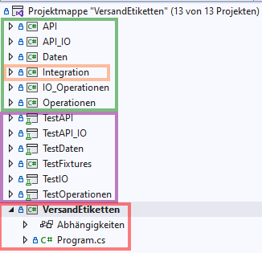

Microsoft Visual Studio 2022
Für die Software-Entwicklung wende ich folgende Techniken/Prinzipien an:
Im Folgenden beschreibe ich grob die Historie, wie ich was in welcher Reihenfolge umgesetzt habe. Diese Reihenfolge ist natürlich nur eine mögliche Variante, die Software zu erstellen. Es zählt einzig das Endergebnis.
Vor der Codierung muss zuerst die Aufgabenstellung verstanden werden. In diesem einfachen Fall ist das gut möglich. In echten Projekten muss die Aufgabenstellung oft gemeinsam erarbeitet werden, bisweilen sogar iterativ mit Prototypen oder leichten Implementierungen.
Die Analyse des Tickets und der Aufgabenstellung wird in der Java-Implementierung beschrieben.
Kommentare, die mit //i/ (i für info) starten, enthalten Erläuterungen zu dieser Referenzimplementierung, sie würden in Produktiv-Code entfallen.
Der Source-Ordner liegt hier:
Hier wurde von mir keine Entwicklung, sondern eine Portierung der Java-Source-Dateien durchgeführt.
Zuerst wurde ein Projekt mit Libraries eingerichtet. Ich verwende hier einen Standard-Aufbau:
Die Produkt-Libraries sind grün, die Test-Libraries violett und die Produkt-Exe rot eingerahmt.
Die Libray Integration ist noch einmal orange eingerahmt. Sie hat eine Sonderstellung, weil sie die Workflows der Applikation (des Produktes) VersandEtiketten implementiert. Deshalb ist die Integration die einzige Library, die ich für ein anderes Produkt nicht wiederverwenden würde.
Alle anderen Libraries aus dem grünen Rahmen können für andere Produkte/Projekte weiterverwendet werden. Zum Beispiel könnte eine andere Integrations-Library das Adress-Feld für einen Briefversand ebenfalls mit diesen Operations-, Daten- und API-Klassen erstellen und als String-Liste an das Brief-Management übergeben.
Bis auf Program.cs in VersandEtiketten enthalten die anderen Projekte zum Start noch keine weiteren Source-Dateien.
Im zweiten Schritt habe ich die API portiert und auch die Tests für die API-Klassen übernommen. Dabei konnte ich auf einige Methoden verzichten, weil .NET bereits
String.IsNullOrWhiteSpace(testStr)
bereitstellt.
Die erste portierte Operation war der GermanAnschriftFormatierer. Um ihn verwenden zu können, mussten noch die Klassen Adresse und Kunde in die Daten-Lib sowie das Interface IAnschrifFormatierer in die Operations-Lib portiert werden.
Da von den Daten nur noch die EtikettVariante1 fehlte, habe ich diese als Nächstes importiert. Dazu gehört auch noch ein Test, weil diese Daten-Klasse auch Methoden enthält.
Portiert inkl. der Tests.
Portiert inkl. der Tests.
Es gibt am 7.12.22 um 12:09 noch keinen Zugriff auf die Operationen vom Programm.cs aus. Das Programm macht noch nichts außer auszugeben, dass noch nichts implementiert ist, wenn man es startet. Es gibt zwar bereits die Klasse VersandEtikettenErsteller, doch sie enthält außer einem einsamen Property noch keine einzige Methode!
Zum Nachsehen in github: Stand vom 7.12.22 um 12:09
Es existiert auch noch keine IO-Funktionalität. Diese wird im nächsten Schritt portiert.
Das war ein wenig mehr Arbeit als bei den anderen Klassen, denn hier muss auf eine andere API zugegriffen werden. .NET unterscheidet sich hier deutlich von Java.
Es wäre vermutlich schneller gegangen, wenn ich alles gleich komplett neu implementiert hätte.
Denn bei der Umstellung von <List<T>> auf <T>
habe ich eine Stelle übersehen (sie versteckte sich sehr weit rechts im Code ...).
Das hat dazu geführt, dass ich die Test-Daten zwar schreiben, aber nicht wieder einlesen konnte.
Die Fehlermeldung vom Parser war zwar korrekt auch nicht sehr hilfreich:
Wie geht man nun damit um?
Ich habe Einiges ausprobiert inkl. Debugging, habe einen eigenen Test geschrieben, der nur ein Daten-Objekt schreibt und lädt, habe ein anderes Daten-Objekt verwendet usw.
Als das Alles nicht geholfen hat, habe ich einfach den Beispiel-Code für XML-Serialisierung mit .NET, den ich aus dem Internet geladen hatte, in eine eigene Test-Methode kopiert und entsprechend angepasst.
Das dauerte einige Minuten, aber dann konnte ich einen einzelnen Datensatz als XML schreiben und auch wieder einlesen.
Als nächstes habe ich die Datei eingelesen, die vom XmlWriter erzeugt wurde. Da auch das funktionierte, musste der Fehler irgenwo im XmlReader liegen.
Es dauerte noch eine Weile, bis ich die Stelle gefunden hatte, obwohl der XmlReader nur zwei Methoden hat:
Manchmal ist man eben blind und sieht den Wald vor lauter Bäumen nicht. Und genau deshalb sollte man auch für (vermeintlich) trivialen Operations-Code immer einen Test schreiben. Man wundert sich nämlich manchmal, welche Fälle im Code nicht behandelt werden oder stellt dabei fest, dass der Code doch nicht so einfach ist.
Nachdem ich alle Hilfs-Test wieder entfernt hatte, blieb nur noch ein einziger Test für die IO-Lib übrig:
Es gibt nur noch eine weitere Test-Klasse im TestAPI_IO, die das
Verzeichnis Csharp/TestData erstellt und den Inhalt löscht:
TCA_0001_ManageTestDirs
Insgesamt habe ich für diesen Teil statt einer halben Stunde zwei Stunden gebraucht.
Im letzten Schritt habe ich die Integratoren portiert und damit die Portierung abgeschlossen. Das war recht leicht und hat gerade einmal eine halbe Stunde gedauert.
Erst jetzt gibt es ein lauffähiges Programm, das die formatierten Anschriften auf der Console ausgibt.
Da ich nur die frei Version vom Visual-Studio nutze, konnte ich leider kein automatisches Code-Coverage durchführen wie in Java.
Code-Coverage fällt daher aus, was ich nur im privaten Bereich akzeptiere. Im professionellen Bereich möchte ich darauf nicht verzichten.
Der nächste Schritt wäre ein Review des Codes durch einen zweiten Entwickler.
Da ich allein an meinem Mini-Projekt arbeite, habe ich das selbst durchgeführt und z.B. noch Kommentare ergänzt und ein paar Kleinigkeiten "gerade gezogen".
Diesen Schritt auszulassen kann sehr teuer werden, denn neben der besseren Lesbarkeit werden oft noch mögliche Probleme oder fehlende Tests entdeckt.
Die Tests zur API_IO sind z.B. noch nicht komplett. Habt ihr es bemerkt?
Das folgende Diagramm zeigt eine Übersicht über die Libraries und ihre Tests:
Ab hier fehlt noch eine weitere Beschreibung.